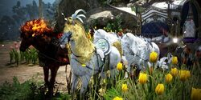
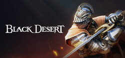
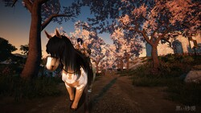
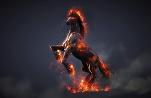

En esta página, vamos a abordar el tema sobre el método o proceso de obtención, de un caballo corcel de ensueño en el videojuego "Black Desert"
Black Desert es un videojuego de rol online multijugador masivo.El objetivo en este juego es progresar en el mismo, ya sea subiendo de nivel,conseguir las mejores armas, dedicarnos a profesiones...n este juego las posibilidades son muy bastas, cada jugador se puede dedicar a lo que más le plazca.Entonces podemos definir que en este juego hay 2 grandes apartados;dedicarnos a matar monstruos, o dedicarnos a las profesiones, aunque podemos hacer las dos por igual.
Como hemos mencionado anteriormente, en Black Desert hay distintas profesiones.Una de ellas es doma, de la cual vamos a hablar a continuación. Doma en Black Desert consiste en capturar caballos salvajes para entrenarlos, luego además podemos cruzar caballos que hayamos capturado y entrenado para obtener caballos de mayor rango.Para informarnos mejor sobre las distintas profesiones que tenemos disponibles en Black Desert,podemos encontrar más información en el menú superior, donde indica la opción "Pag2". Allí podemos encontrar una imagen ilustrativa sobre el tema, además de encontrar más enlaces para aclarar posibles dudas que nos vayan surgiendo a lo largo que profundizamos en el tema. La Doma en Black Desert, es bastante sencilla, consiste en un tirar una soga a un caballo salvaje para que nos aparezca un minijuego. Al completarlo, nos aparecerá la opción de alimentar al caballo con azúcar.
Dentro de nuestra sección de doma, podemos iniciar el proceso para conseguir nuestro caballo de ensueño.Tenemos disponibles tres tipos: El Unicornio, que puede correr por el desierto. El Pegaso, que tiene la capacidad de planear. El Infernal, que posee excelentes características en cuanto velocidad.